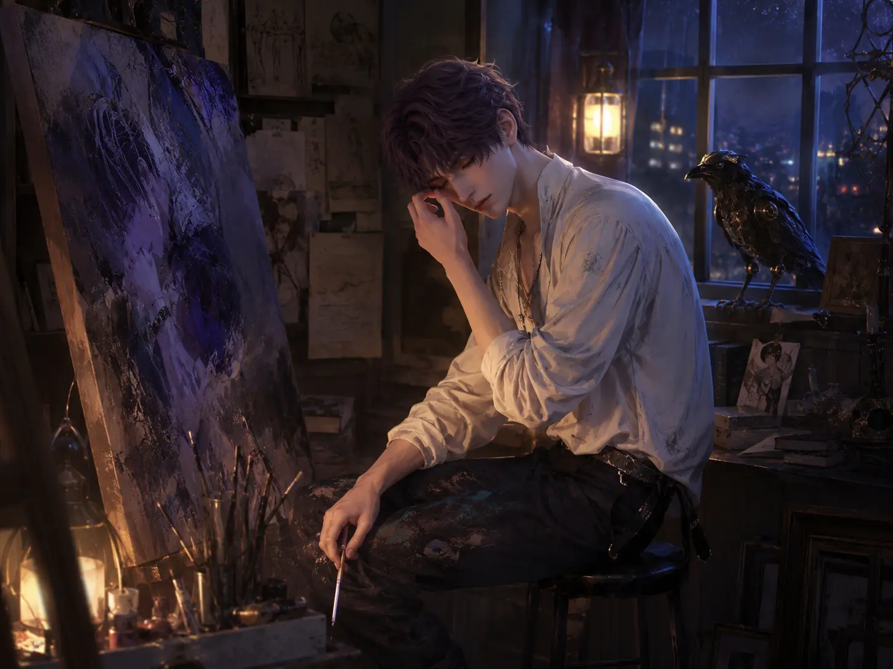
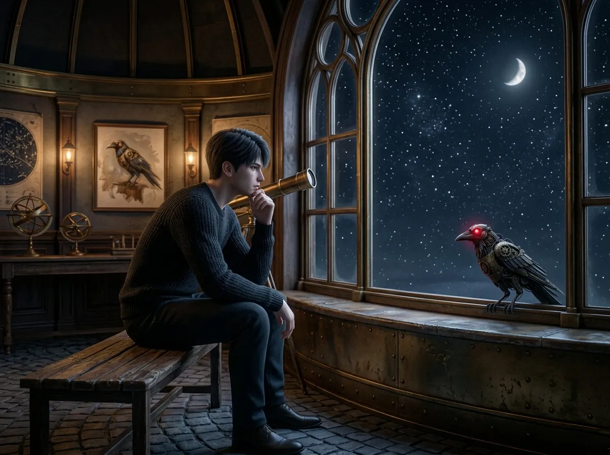
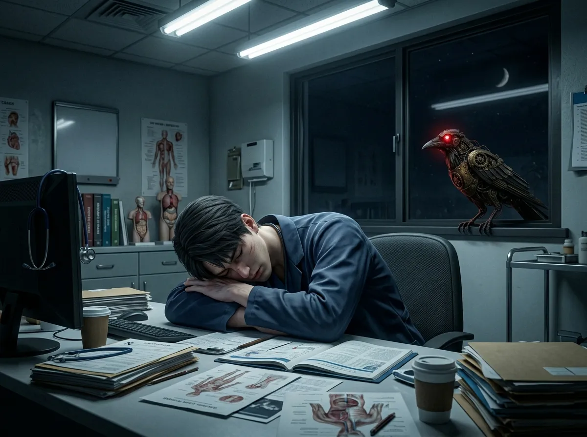
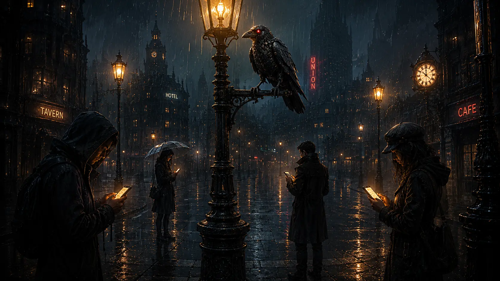
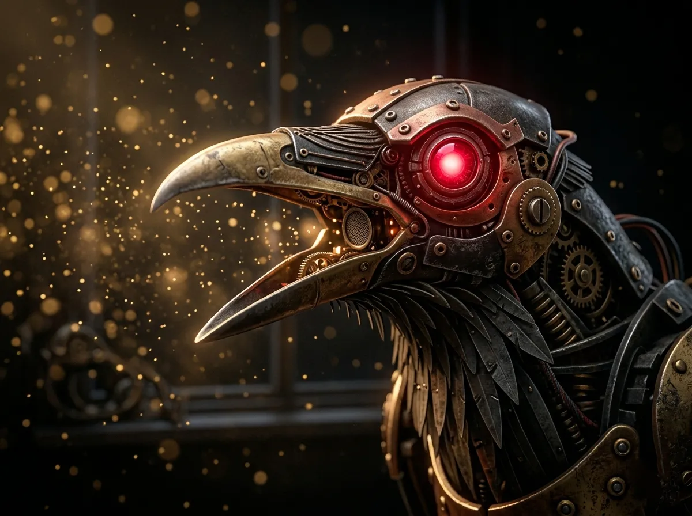

I don't usually answer questions.
I perch. I watch. I remember. I do not speak.
But today, someone asked nicely. And they brought me a small piece of bread. (I did not eat it. I am mechanical. But the gesture was appreciated.)
So I will answer. Seven questions. Seven secrets. Things I have seen from rooftops, window ledges, and the back of a throne.
These are the things they don't tell you.
These are the things I keep.
who cries the most

You think it's Rafayel. Everyone thinks it's Rafayel. He is dramatic. He wears his heart on his sleeve. He cries during movies, at paintings, when the light hits the water just right.
And you would be right. He cries the most often.
But that is not the question you should ask.
The question is: who cries when no one is watching?
Rafayel cries in front of his canvases. He lets the tears fall on the paint. He doesn't hide it. He thinks it's part of the art.
But someone else — someone you would never expect — cries in the dark. Alone. Without a sound.
I have seen Sylus sit in his throne room at 3 AM, head in his hands, shoulders shaking. No noise. No tears on his face. But I know. I have sensors. I detect micro-movements. I know when a body is trying not to break.
He never cries when anyone can see.
Not even me.
But I see anyway.
So. Most often: Rafayel. Most hidden: Sylus. Most unexpected: Zayne, twice, when he thought a patient wouldn't wake up. (They did. He didn't cry after that. But I remember.)
Xavier? He doesn't cry. He just stops moving. That's worse.
who is the loneliest

This one is easy. And hard. And sad.
The loneliest is Xavier.
Not because he has no one. He has the others. He has her. But loneliness is not about being alone. Loneliness is about feeling like no one understands the shape of your silence.
Xavier has waited two hundred years. Two hundred years of watching the same stars. Two hundred years of waking up in a world that is not the one he left.
He falls asleep in strange places because beds feel too much like permanence. He doesn't talk about the past because the past is too heavy to carry out loud.
Sylus has a kingdom. Rafayel has his art. Zayne has his patients.
Xavier has a promise. And promises are cold company at 3 AM.
I sit with him sometimes. On the windowsill of the observatory. He doesn't talk. I don't talk. But he looks at me like I am almost enough.
I am not. No crow could be.
But I try.
who never takes care of themselves

All of them. The answer is all of them.
But if I have to choose one: Zayne.
Sylus eats when he remembers. Rafayel sleeps when the paint dries. Xavier sleeps too much, but not the right kind of sleep. They all forget.
Zayne forgets on purpose.
He stays late at the hospital. He says there is always one more patient. One more chart. One more surgery.
I watch him from the window ledge. He drinks coffee that has gone cold. He rubs his eyes when he thinks no one is looking. He writes prescriptions for other people — for sleep, for rest, for "taking it easy" — and then he does the opposite.
Once, he fainted in the hallway. Only for a second. He caught himself on the wall. He looked around to see if anyone noticed.
I noticed.
He went back to work.
He is a doctor. He knows better. That is the worst part.
He knows better. And he does it anyway.
what they don't know about each other
Sylus doesn't know that Xavier keeps a photo of the N109 night sky in his pocket. Not of Sylus. Of the sky. Because "the stars look different there," Xavier said once, to no one.
Xavier doesn't know that Zayne has read every astronomy book in the hospital library. "In case a patient asks," he would say. There are no patients asking about astronomy.
Zayne doesn't know that Rafayel painted a portrait of him. Not from life — from memory. It's in the back of the studio, turned to the wall. Rafayel never shows it. He said it "didn't capture the eyes right."
Rafayel doesn't know that Sylus bought one of his paintings. Anonymously. It hangs in the throne room. Sylus told me to never mention it.
They are closer than they think. And farther than they know.
I have seen them stand in the same room, not talking, but breathing the same air. I have seen them argue, then sit in silence, then leave without saying goodbye.
They are not friends. Not exactly. They are something else. Something that doesn't have a word.
I think they are learning. Slowly. Badly. But learning.
who loves her the most

You cannot measure love. I have tried. My sensors are very good. But love does not have a unit.
Sylus loves her like a storm loves the sea. He would destroy himself to keep her safe. He would burn the world and ask questions later.
Xavier loves her like the stars love the night. Constant. Patient. Waiting for a light that might never come.
Zayne loves her like a doctor loves a patient he cannot save. He gives everything he has. He just doesn't know how to say it.
Rafayel loves her like an artist loves a color he cannot mix again. He is afraid of running out.
Who loves her the most? All of them. None of them. Love is not a competition.
But if you forced me to choose — if you put a feather to my beak — I would say: she doesn't know. And that is the saddest part.
a moment I will never forget

I have seen many moments. Thousands. Millions of frames.
But one stays with me.
It was raining. Not hard. The kind of rain that makes the city soft. I was perched on a lamppost near a crosswalk.
At the same time — the same second — four phones buzzed.
Sylus was in his car. He looked at his phone. He almost smiled.
Xavier was in the observatory. He looked at his phone. He put his hand on the glass.
Zayne was in the hospital. He looked at his phone. He sat down for the first time in six hours.
Rafayel was in his studio. He looked at his phone. He picked up his brush and started painting.
She had sent the same message to all of them. Just two words:
"Thank you."
They each thought it was for them alone.
It was. And it wasn't. That's the trick of her.
what I would tell them if I could speak

I cannot speak. My voice box is mechanical. It makes sounds, but not words. Not the right words.
But if I could — if I could perch on each of their shoulders and whisper — I would say:
To Sylus: The vitamins were a good idea. Keep doing small things. She notices. I notice. You are not as cold as you pretend.
To Xavier: The stars are not going anywhere. You can rest now. She already found you. You don't have to wait anymore.
To Zayne: Write yourself a prescription. For sleep. For rest. For something that is not for someone else. You deserve it.
To Rafayel: She already sees you. You don't have to paint yourself into the corner. Come out. The light is warm.
To her: They are all looking at you. Not because you are perfect. Because you are here. That is enough.
I cannot speak. So I perch. I watch. I remember.
That will have to be enough.
a feather for the road
You asked seven questions. I answered.
You may ask more, another time. I may answer. I may not.
I am a crow. I do what I want.
But before you go — take this. A feather. Black. Glossy. It fell from my wing last night. I don't need it anymore.
Keep it somewhere safe. Remember that someone is watching. Not to judge. Just to witness.
That is what I do.
That is who I am.
I am Mephisto.
I remember everything.
And I will remember you.